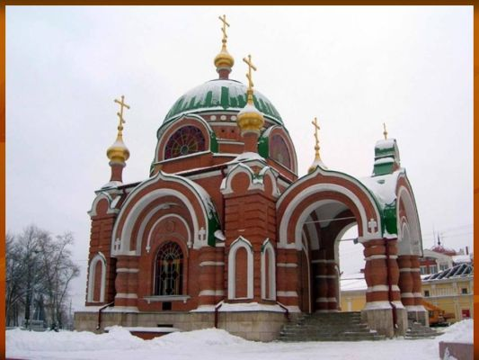

Достопримечательности Липецка


Храм-часовня Петра и Павла в Липецке
Православная часовня на площади Революции города Липецка. Архитектурная жемчужина и один из символов и главных достопримечательностей города в конце XIX - начале XX века. 8 сентября 2012 года часовне присвоен статус храма-часовни, в ней была совершенна первая литургия.
Изображения:


Храм-часовня Петра и Павла на карте: